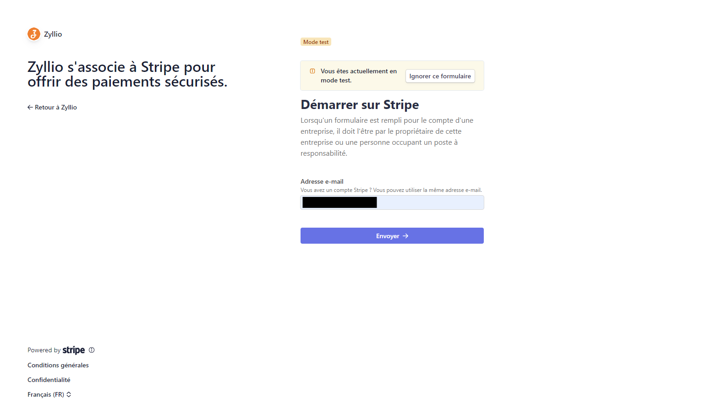
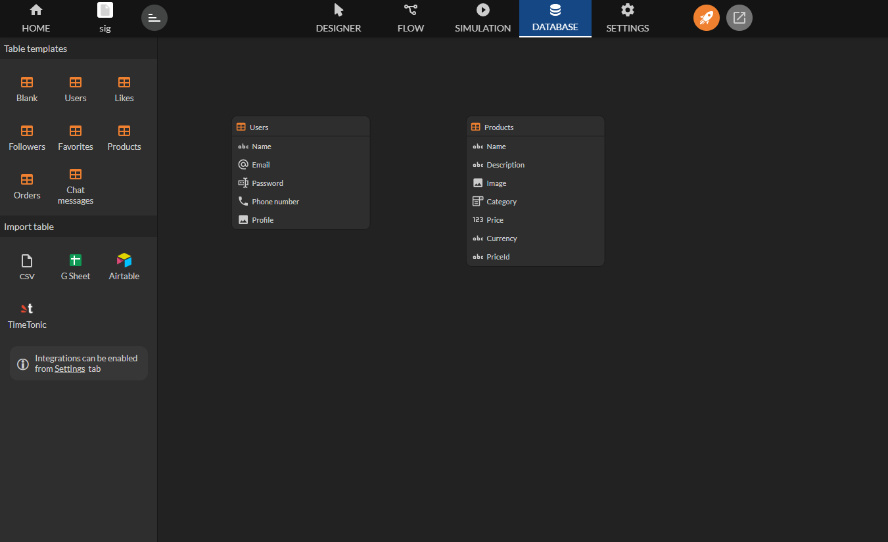
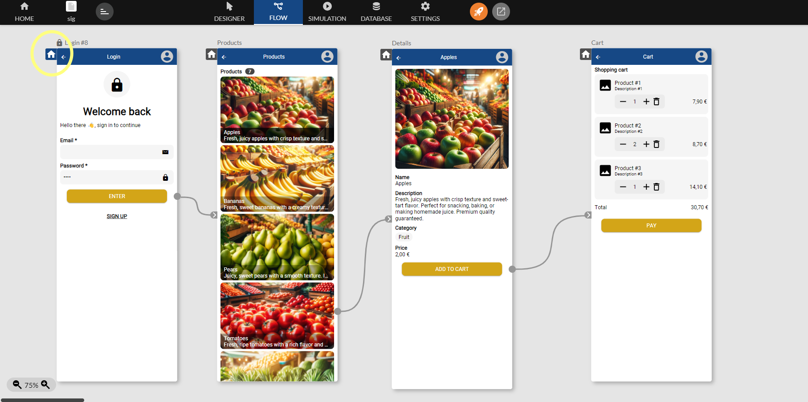
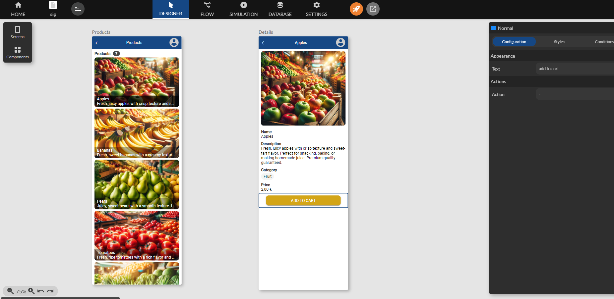
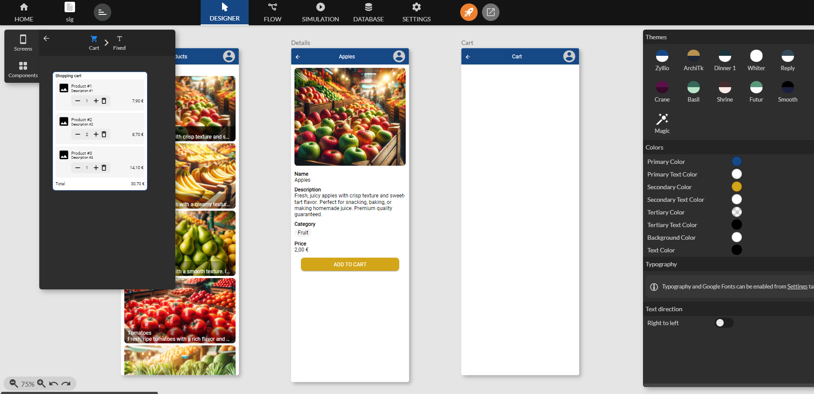
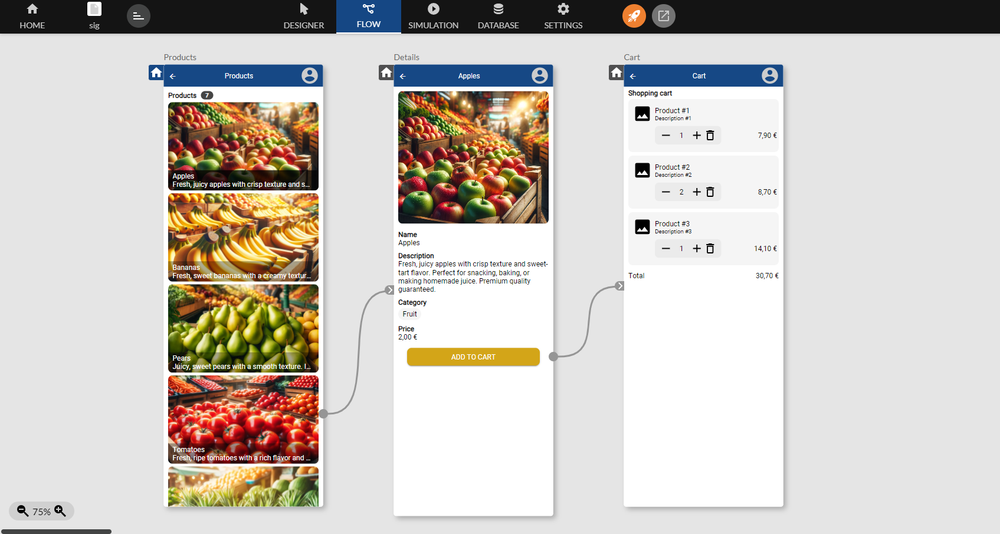
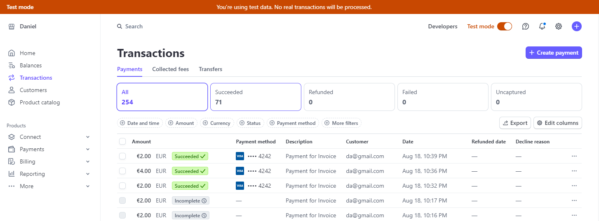
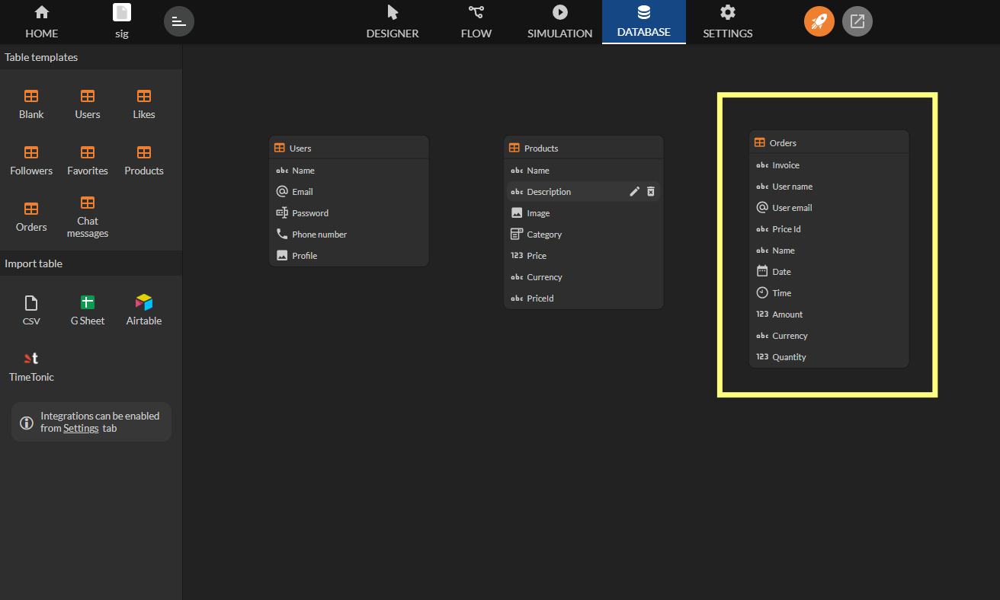
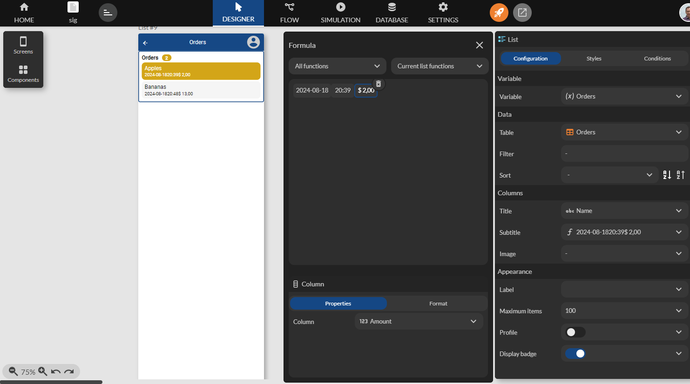

Paiements Stripe
Stripe est une infrastructure de paiement en ligne qui permet aux entreprises de gérer et d'accepter des paiements en toute sécurité.
Disponible depuis le plan Enterprise.
La plateforme Zyllio ne prélève aucune commission sur les paiements effectués via Stripe.
En intégrant Zyllio avec Stripe, vous pourrez bénéficier de ses fonctionnalités robustes, telles que la gestion des paiements, la facturation récurrente, la protection contre la fraude, et bien plus encore.
Prérequis
Un compte Stripe valide est nécessaire pour connecter les solutions Stripe et Zyllio.
De plus, un abonnement au plan Zyllio Enterprise est requis pour activer cette fonctionnalité.
Configuration
L'intégration de Stripe peut être activée depuis l'onglet Settings / Intégration / Stripe en activant le bouton Enable comme indiqué sur cette image.

Connecter votre compte Stripe
Ensuite, cliquez sur le bouton Connect with Stripe pour connecter votre compte avec la plateforme Zyllio.

Connectez vous et cliquez sur Envoyer.

Et finalement cliquez sur le bouton Connecter. Fermer l’onglet lorsque le message suivant s’affiche: "Your Stripe account has been connected. Please close this window".
Mode test et production
Nous vous recommandons d’effectuer toute votre conception de votre application Zyllio et vos tests de paiements en mode Test.
Pendant la période de tests, l’option Production Mode doit être désactivé.
Le mode production peut être activé une fois l’application finalisée.
Devise
Le paramètre currency permet d’indiquer la devise des paiements de votre application mobile.
| Nom devise | Currency |
|---|---|
| Dollar | USD |
| Euro | EUR |
Création des produits
Depuis l’onglet Database, cliquez déposez une table Products.

Ainsi Zyllio crée une table prête à l’emploi avec 7 produits d’exemple.

Création des écrans catalogue
Depuis l’onglet Designer, sélectionnez le modèle d’écran List puis sélectionnez la table Products.

Cliquez déposez l’écran pour obtenir ce premier écran, renommez l’écran en Products.

Ensuite créez un écran de détail en sélectionnant un modèle d’écran Details, puis l’écran Products et enfin le composant Products.

Cliquez déposez l’écran pour obtenir ce nouvel écran, renommer le en Details.
- Supprimer les composants Currency et PriceId de l’écran.
- Modifier le composant Price en Formule, puis sélectionnez le format Currency et symbole €.
- Modifier le composant Price et modifier la propriété Label en Price.

Et reliez les 2 écrans depuis l’onglet Flow.

Authentification
Créez un écran d’authentification en utilisant un modèle d’écran Login puis la table Users. Ensuite reliez le bouton Enter à l’écran Products.

Désignez l’écran Login comme étant l’écran de démarrage en cliquant sur l’icone comme ci-dessous.

Création d’un panier
Ajoutez un bouton Add to cart dans l’écran Details.

Définir une action Add Product, renseigner ces propriétés.
| Propriete | Type | Valeur |
|---|---|---|
| Image | Variable | Products/Image |
| Price Id | Variable | Products/PriceId |
| Name | Variable | Products/Name |
| Description | Variable | Products/Description |
| Price | Variable | Products/Price |
| Currency | Variable | Products/Currency |
| Quantity | Fixed | 1 |

Ensuite créez un écran appelé Cart pour afficher la panier. Sélectionner un composant Cart en sélectionnant Fixed.

Déposez le composant dans l’écran comme suit.

Reliez le bouton Add To Cart à l’écran Cart.

Création d’un bouton Paiement
Ajouter un bouton appelé Pay qui utilise l’action Process Payment.

Définir la source des prix
L'écran ci-dessous illustre la configuration de l'intégration Stripe dans votre application. Les éléments encadrés en jaune mettent en évidence la configuration de la source des prix, essentielle pour lier les données de votre base à Stripe.

Voici une explication des différents champs: Price Table, Price ID Column, Price Column.
| Champ | Description | Exemple |
|---|---|---|
| Price Table (Table des prix) | Sélectionnez la table de votre base de données qui contient les informations sur vos produits ou services. Cette table sert de référence pour les prix que Stripe utilisera lors des transactions. | Products |
| Price ID Column (Colonne ID de prix) | Sélectionnez la colonne qui contient les identifiants uniques des prix (Price ID). Ces identifiants permettent à Stripe de relier les prix définis dans votre base de données à ceux configurés dans votre compte Stripe. | PriceId (ex: price_12345) |
| Price Column (Colonne de prix) | Sélectionnez la colonne qui contient les valeurs des prix. Cette colonne définit le montant que les utilisateurs paieront pour un produit ou service. | Price (ex: 10.00) |
A ce stade votre application est prête pour acquérir des paiements en mode test.
Tester un paiement
Lorsque vous effectuez des tests interactifs, utilisez un numéro de carte bancaire de type 4242 4242 4242 4242.
- Utilisez une date d’expiration valide telle que 12/34.
- Utilisez n’importe quel code CVC à trois chiffres (quatre chiffres pour les cartes American Express).
- Utilisez la valeur de votre choix pour les autres champs du formulaire.

Les paiements apparaissent dans la section Transactions.

Réconcilier dans Zyllio
Zyllio capture les paiements réussis dans une table spécifique appelée Orders. Il suffit de la créer depuis les modèles de tables dans l’onglet Database.

Voici un exemple de transaction réussi.

Afficher les commandes utilisateurs
Il suffit de créer un nouvel écran appelé Orders qui liste le contenu de la table Orders.

Un filtre est nécessaire pour n’afficher que les commandes de l’utilisateur authentifié.

Erreurs
| Erreur | Message Stripe | Raison |
|---|---|---|
| Le paiement a echoue, code 01 | The `price` parameter should be the ID of a price object, rather than the literal numerical price. Please see https://stripe.com/docs/billing/prices-guide#create-prices for more information about how to set up price objects. | Un ou plusieurs produits ont un priceId non declare dans le catalogue Stripe |
| Le paiement a echoue, code 01 | The price specified supports currencies of `eur` which doesn't include the expected currency of `usd`. | La devise d'un produit ne correspond pas a la devise de l'integration Stripe dans les Settings Zyllio |
| Le paiement a echoue, code 02 | Requires payment method | Le moyen de paiement n'est pas valide |
| Le paiement a echoue, code 03 | Status unknown | Ne devrait pas se produire |